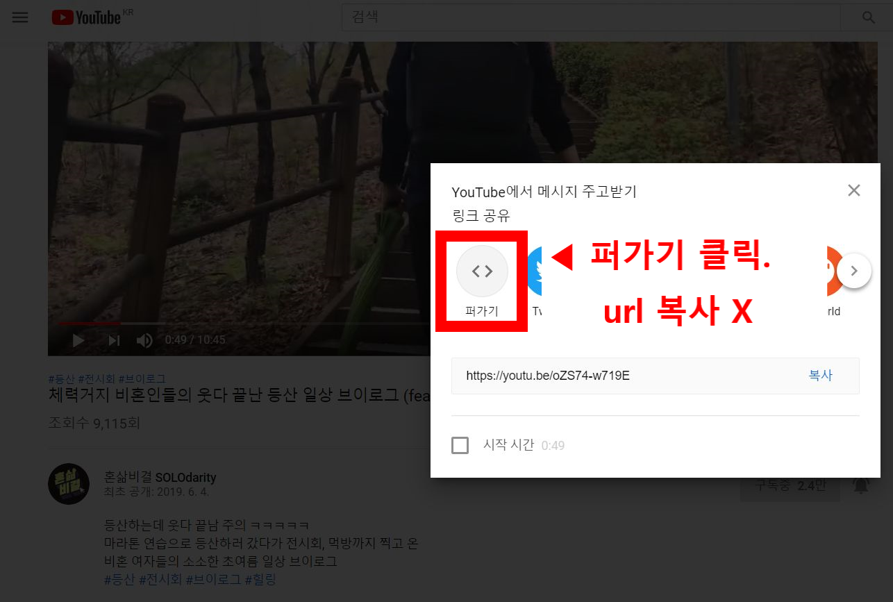

웹페이지에 자료로 유튜브 동영상을 넣고 싶을때, 유튜브 영상에서 이미 코드로 영상을 불러낼 수 있는 서비스를 제공하고 있어 우리는 별다른 코드를 따지 않아도 된다.
삽입한 유튜브 영상 주소 : https://youtu.be/oZS74-w719E
매번 챙겨보는 비혼 여성 유튜브 채널 혼삶비결! 채널 초창기였던 명절파업 영상부터 구독해서 자기만의 방, 집구할때 호구 안잡히는 법, 최근 대리모와 임신중단죄 영상까지 유익한 영상들이 많이 올라오는데 재밌기 까지 해서 매번 알람 맞춰두고 보고 있습니다. 오래 활동해주시길!
url 복사를 하면 웹 페이지에는 주소에 하이퍼링크도 안넣어지고 주소 텍스트만 들어가기 때문에 꼭 퍼가기를 클릭해서 들어한 후 코드를 복사해서 붙여넣기 해야 한다.
